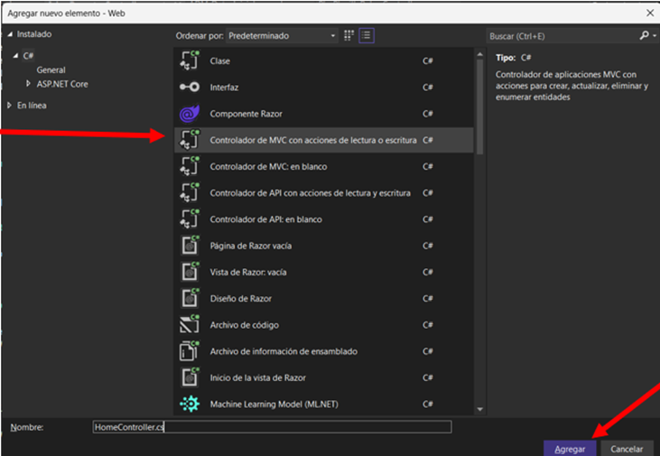

Manual para creación pantallas de Reportes
Preparación para crear pantallas
Para empezar con la creación de las pantallas de Reportes se debe identificar en que área va a estar ubicado para tener un orden con los demás archivos del proyecto y así poder navegar sin complejidad en el proyecto.
En este caso el área de Reportes será ADM.
Crear Menú
Para crear el menú se debe dirigir hacia el proyecto XMigracion, dentro de la carpeta "DATA" y abrir el archivo ADM_DatosIniciales.yaml.
En este caso al ser parte de ADM, se debe navegar dentro de este código hasta encontrar el módulo de administración.

Aquí se debe implementar el nuevo menú declarando un código, el menú padre, el nombre con el que se va a desplegar esta nueva opción del menú, el área en el que se encuentra el controlador, el controlador y la acción que en la mayoría de los casos la acción es Index.
Adicionalmente, se debe asignar un rol al menú creado para que el usuario perteneciente a ese rol pueda visualizarlo. Para esto en el archivo toca colocar el nombre del rol y el codigo del menú creado.
Para que los cambios sean efectuados se debe ejecutar el proyecto XMigracion.
Una vez ejecutado el proyecto XMigracion el nuevo menú se reflejará en el rol especificado.
Controlador
Los controladores son componentes que manejan la lógica de la aplicación. En C#, los controladores reciben las solicitudes del usuario, interactúan con el modelo (que representa los datos y la lógica de negocio) y eligen qué vista renderizar. Se encargan de procesar la entrada del usuario, realizar las operaciones necesarias y devolver una respuesta adecuada, que puede ser una vista o un redireccionamiento.
Crear Controlador
Dentro del proyecto Web, identificar la carpeta Areas. Aquí se desplegarán todas las áreas del proyecto, para la creación de Reportes se ubicará en el área ADM.
Para crear un controlador se debe presionar clic derecho en la carpeta Controllers, desplegar opciones de “Agregar” y seleccionar controlador.
Mantener la opción por defecto “Controlador de MVC con acciones de lectura o escritura” y presionar “Agregar”.
En la siguiente pantalla de igual forma mantener la opción por defecto “Controlador de MVC con acciones de lectura o escritura”.

Para el nombre del controlador se debe seguir con la nomenclatura utilizada en el resto del proyecto: Area_NombrePantallaController en este caso el nombre sería, “Adm_ReportesController”, la primera letra de cada palabra con mayúscula y el resto con minúsculas.

Una vez creado el controlador, mantener únicamente namespace y la primera clase pública.
Para iniciar con la codificación en el controlador se comienza definiendo el Area del controlador debajo de namespace y declarar SipoContext. El constructor “Adm_ReportesController” recibe un parámetro de tipo SiproContext llamado _db. Dentro del constructor, el parámetro _db se asigna a la variable de instancia db. Esto permite que el controlador use db para acceder a la base de datos.
Vistas
Las vistas en el patrón MVC (Modelo-Vista-Controlador) son responsables de la presentación de la información. En C#, las vistas suelen estar implementadas como archivos .cshtml que utilizan Razor, un motor de plantillas que permite mezclar código C# con HTML. Las vistas reciben datos del controlador y los presentan al usuario, permitiendo la interacción a través de formularios y enlaces.
Crear Vistas
Para crear las vistas del proyecto se debe desplazarse hasta la carpeta Views dentro del área correspondiente.
Para crear una nueva carpeta se debe presionar clic derecho en la carpeta Views, desplegar las opciones de “Agregar” y seleccionar “Nueva Carpeta”.
La nueva carpeta debe tener el mismo nombre que el controlador, quitando la palabra Controller y manteniendo la misma nomenclatura.
La nueva carpeta debe llevar el mismo nombre que el controlador, eliminando la palabra "Controller" y manteniendo la misma nomenclatura. Para seguir con la estructura del proyecto, crea una carpeta denominada “Adm_Reportes”.
Una vez creada la carpeta se debe agregar las vistas correspondientes. Para crear una vista se debe presionar clic derecho en la carpeta creada, desplegar las opciones de “Agregar” y seleccionar “Vista”.
En la siguiente pantalla mantener la opción por defecto “Vista de Razor: vacía”, y presionar Siguiente.
En la siguiente Pantalla mantener la opción por defecto “Vista de Razor: vacía”. En este caso al ser un CRUD son necesarias cuatro pantallas: Index, Add, Edit, Delete.
Index
Index en el controlador
En este caso al ser una pantalla simple no requiere implementar ViewModel o Servicio. Se declara un tipo ActionResult que obtenga datos en forma de lista para mandarlos a la vista.
Index en la vista
La construcción de la vista Index se detallará desde el inicio del documento hasta el final de este.
La directiva @model especifica el tipo de modelo que se va a recibir, en este caso al enviar una lista desde el controlador se debe declara como IEnumerable.
En el bloque de código @{}, Layout se usa para definir el diseño que se va a aplicar en la vista actual.
ViewBag.Title es una propiedad utilizada para mostrar el título de la página actual.
Al ser un CRUD esta pantalla debe contar con un botón para agregar un nuevo reporte, este botón se mostrará en la esquina superior derecha.
Para construir la tabla en donde se visualizará la información obtenida en el controlador, se debe declarar una tabla y un thead para los nombres de las columnas.
Después se debe declarar el tbody, dentro de este se necesita de un foreach para recorrer cada elemento de la lista proporcionada por el controlador. Adicional a eso se deben implementar los botones de editar y eliminar. Estos deben enviar le Id de ADM_Reporte para alimentar a las pantallas de edit y delete.
Add
Add en el controlador
Esta vista no requiere de información adicional para su funcionamiento, por lo que el método Get únicamente requiere llamar a la vista Add.
Para el método Post es necesario obtener como parámetro a la entidad ADM_Reporte y almacenarlo en la variable model.
Para un correcto funcionamiento se trabaja con try catch para controlar errores. Se remueve un ModelState para eliminar errores de validación específicos.
Se verifica si el modelo es válido mediante “!ModelState.IsValid”, caso contrario dispara una excepción.
Las variables string deben pasar por la funciona QuitarEspaciosExtra para evitar espacios en blanco al inicio, al final y espacios dobles entre palabras, en este caso Nombre y Descripción.
db.Adm_Reporte.Add(model); Agrega el objeto model al contexto de la base de datos y posteriormente guarda los cambios realizados.
TempData envía un mensaje de éxito al finalizar la inserción de datos correctamente y retorna a la pantalla Index.
Dentro del bloque catch se encuentra control de errores con ModelState.AddModelError que despliega un mensaje en la parte superior de la pantalla si se lanza una excepción.
Add en la vista
Al igual que la vista Index cuenta con la directiva @model y el bloque @{}
Para el diseño de la pantalla se declara un formulario en el que se muestran cajas de texto para escribir la información y enviarlos al controlador.
El uso de asp-for es una etiqueta que ayuda a Razor a enlazar el campo de entrada con la propiedad Nombre del modelo ADM-Reporte.
El botón de “Cancelar” requiere de enviar parámetros para regresar al Index. En este caso se envía área, controller y action.
Edit
Edit en el controlador
Para el método Get de la función Edit, requiere recibir un parámetro, en este caso Id, para recuperar la información del elemento seleccionado y alimentar a la vista.
Para el método Post es necesario obtener como parámetro a la entidad ADM_Reporte y almacenarlo en la variable model.
Para el método Post se trabaja con try catch para controlar errores. Se remueve un ModelState para eliminar errores de validación específicos.
Se verifica si el modelo es válido mediante “!ModelState.IsValid”, caso contrario dispara una excepción.
Las variables string deben pasar por la funciona QuitarEspaciosExtra para evitar espacios en blanco al inicio, al final y espacios dobles entre palabras, en este caso Nombre y Descripción.
db.Adm_Reporte.Update(model), es necesario utilizar. Update para la función editar para actualizar el objeto model al contexto de la base de datos y posteriormente guarda los cambios realizados.
TempData envía un mensaje de éxito al finalizar la inserción de datos correctamente y retorna a la pantalla Index.
Dentro del bloque catch se encuentra control de errores con ModelState.AddModelError que despliega un mensaje en la parte superior de la pantalla si se lanza una excepción.
Edit en la vista
Al igual que la vista Index cuenta con la directiva @model y el bloque @{}
Para el diseño de la pantalla se declara un formulario en el que se muestran cajas de texto para escribir la información y enviarlos al controlador.
El uso de asp-for es una etiqueta que ayuda a Razor a enlazar el campo de entrada con la propiedad Nombre del modelo ADM-Reporte.
El botón de “Cancelar” requiere de enviar parámetros para regresar al Index. En este caso se envía área, controller y action.
Delete
Delete en el controlador
Para el método Get de la función Delete, requiere recibir un parámetro, en este caso Id, para recuperar la información del elemento seleccionado y alimentar a la vista.
Para el método Post es necesario obtener como parámetro a la entidad ADM_Reporte y almacenarlo en la variable model.
Para el método Post se trabaja con try catch para controlar errores. Se remueve un ModelState para eliminar errores de validación específicos.
Se verifica si el modelo es válido mediante “!ModelState.IsValid”, caso contrario dispara una excepción.
Las variables string deben pasar por la funciona QuitarEspaciosExtra para evitar espacios en blanco al inicio, al final y espacios dobles entre palabras, en este caso Nombre y Descripción.
db.Adm_Reporte.Remove(model), es necesario utilizar. Remove para la función delete para eliminar el objeto model en el contexto de la base de datos y posteriormente guarda los cambios realizados.
TempData envía un mensaje de éxito al finalizar la inserción de datos correctamente y retorna a la pantalla Index.
Dentro del bloque catch se encuentra control de errores con ModelState.AddModelError que despliega un mensaje en la parte superior de la pantalla si se lanza una excepción.
Delete en la vista
Al igual que la vista Index cuenta con la directiva @model y el bloque @{}
Para el diseño de la pantalla se declara un formulario en el que se muestran cajas de texto para escribir la información y enviarlos al controlador.
El uso de asp-for es una etiqueta que ayuda a Razor a enlazar el campo de entrada con la propiedad Nombre del modelo ADM-Reporte.
La pantalla Delete es únicamente informativa, por eso, los inputs tienen la propiedad readonly.
El botón de “Cancelar” requiere de enviar parámetros para regresar al Index. En este caso se envía área, controller y action.